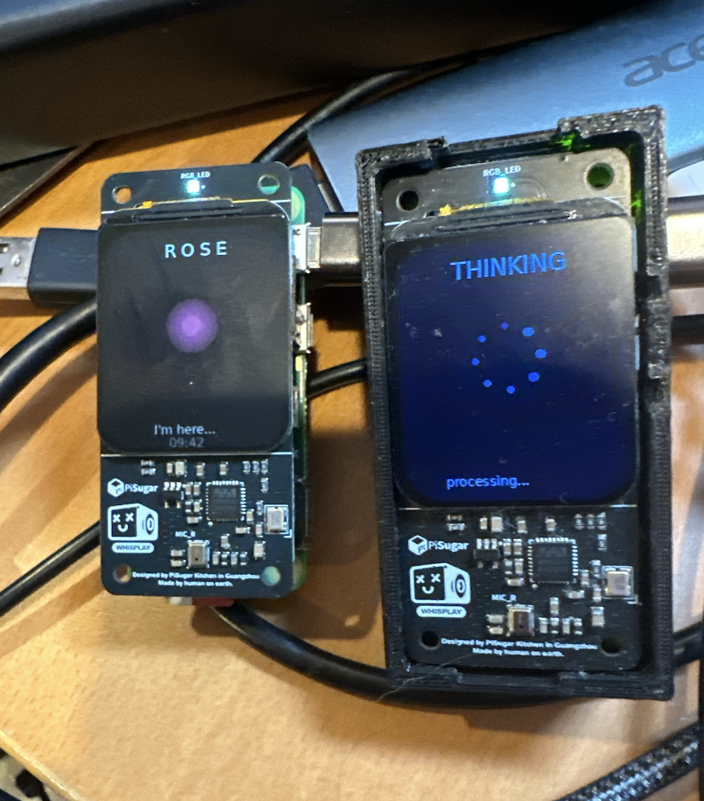

The gap between what a person understands and what they can still express is one of the loneliest places a human being can live. Dignity isn't something you lose. It is something that gets buried when nobody around you knows who you are anymore.
So we did not build something that tries to fix the person. We built a companion that remembers them: their people, their stories, what makes them laugh. Then it gets out of the way, and lets them show up as themselves.

Rose's first home is a caregiver's. A husband cares for his wife. We call her Susan; that isn't her real name. She has Alzheimer's. He fixes every meal, organizes every pill, and walks her back to bed when she wanders.
Rose's job is not to test what Susan has lost. Her job is to engage what she still has.
"I want to go to... the place. With the water. We always used to..."
"The lake house? Where you and Tom spent your summers."
"Yes. The lake. We taught the kids to swim right off the dock."
"Tom built that dock himself. You told me once how proud he was of it."
"He was. He really was."
Rose never quizzes her and never corrects her. She offers what she already knows, and lets Susan find her own way back to the memory. The word she couldn't reach becomes a whole afternoon she can.
Alzheimer's usually takes memory for recent events first. Skills, feelings, and long-familiar music are often among the last to go.1 Many people who struggle to find a daughter's name can still sing along to a song from their youth.
The music from our teens and early twenties holds some of our most vivid memories.2 Personalized music is one of the most promising non-drug approaches in dementia care, and trials show it can gently lift mood, with no side effects.3 So Rose isn't a quiz. She is a companion who knows Susan's people, songs, and stories, and reaches the parts of her that remain.
About one in three family dementia caregivers experiences depression.4 The companion who sits with Susan also tracks her patterns, summarizes her days, and gives her husband the doctor-ready report nobody has time to type. In the room, for both of them.
Rose lives with the family right now. She even travels with them: powered down in one place, she wakes up oriented in another.
She speaks only what's true, and says "I don't know" rather than inventing. That guardrail is what makes her safe for a vulnerable person.
Per-person memory of the family, with the source of every fact kept and never overwritten. New memories added just by talking to her.
Photos of loved ones on her display. She recognizes who matters and brings them up.
Rose is an AI agent that lives entirely on the device she resides on: a Raspberry Pi Zero, about $100 in parts. A privacy-enforced device. Everything stays in the home. Nothing goes to the cloud. The next one is a build, not a miracle.
Rose isn't built to remind Susan what she has lost. She's built to sit with what she still has.